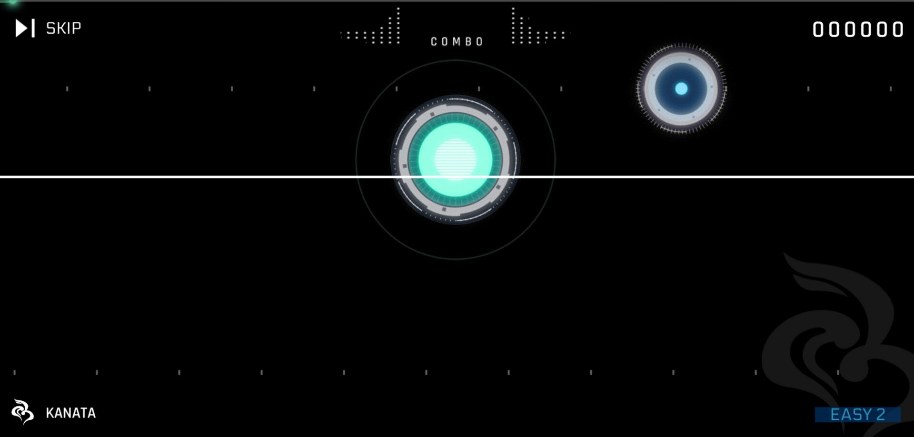
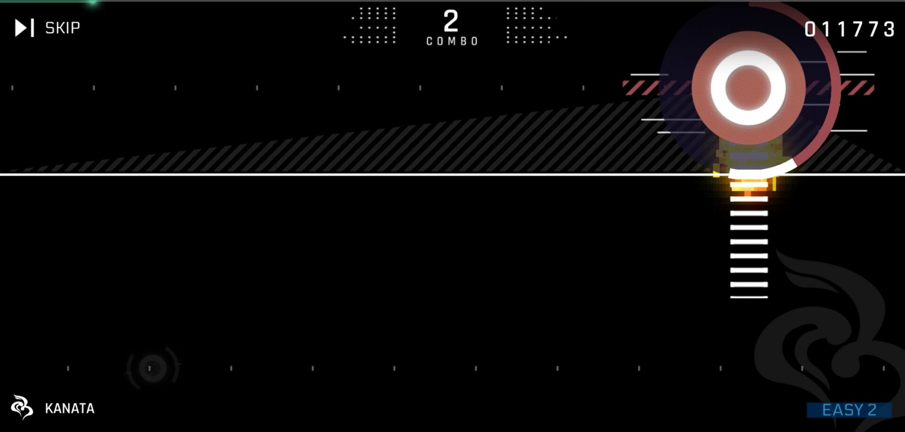
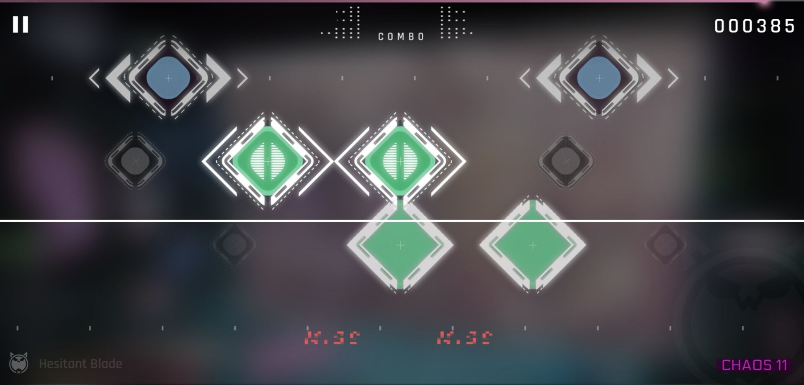
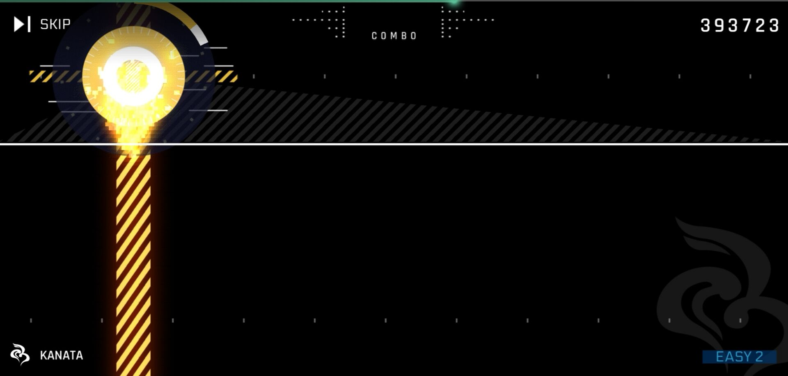

简介
未来，人类重新定义了网路的发展和连线方式，能够轻易地在现实世界同步存取网路世界，改变了千年以来生活的样貌。
在巨型精神网路空间cyTus里，一位来历不明的传奇DJ Æsir，其音乐有着让人为之疯狂的魅力，每个音符和节拍都能够深深重击听者的灵魂深处。
某日，从未露面的Æsir突然宣布要举办第一场大型虚拟音乐祭——Æsir-FEST，邀请了当红偶像歌手以及人气DJ作为开场嘉宾。
宣传公开之际即造成前所未见的讨论热潮，所有人无不想一睹Æsir的真实面貌。
而在音乐祭入场的前一小时，数以千万计的连线浏览次数打破历史纪录，整个城市瞬间沸腾了起来，等待Æsir如同天神般的降临……
游戏系统
音符
作为Cytus一代的续作，二代继承了一代的三种传统音符形式：
- 普通音符：在扫描线到其中心位置时被点击。注意此音符判定点击动作，即划过不会触发判定。

- Drag：在扫描线到其中心时被划过或点击。

- Hold：在扫描线到其气泡中心位置时按下，并在扫描线达到长条尾端后松开。

并加入了新的音符形式：
- Flick（轻滑）：CHAOS, GLITCH难度限定（但并非所有CHAOS谱都有Flick，如Green Hope CHAOS难度）。左右滑动均可（但上下不行）。

- 跨屏Hold：和普通Hold处理方式一样，但会跨屏幕，这种Hold因此也不存在出现时机和时长上的限制。对于做谱人来说，跨屏Hold在一定程度上解决了传统Hold只能在一屏内出现，凑不满时值的问题。

- 特殊Drag（点锁）：2.0版本登场，和普通Drag不同的是，其颜色使用普通Click的颜色，而这类Drag的头部必须被点击才能判定。
- 二代的锁链可以真正的跨屏滑动，而不是像一代会在两屏分界处拆开。
判定
判定有黄Perfect（Perfect/大P）、白Perfect（Great/小P）、Good、Bad、Miss五种。不同的音符对应的动画也不一样。
| 判定等级 |
误差时间(ms) |
分数 |
TP |
连击 |
| PERFECT |
0~70 |
100% |
100% |
√ |
| PERFECT |
71~175 |
100% |
70% |
√ |
| GOOD |
- |
30% |
30% |
√ |
| BAD |
- |
30% |
0% |
× |
| MISS |
- |
0% |
0% |
× |
- 全Perfect时上方连击数为黄色；出现Good时，连击数变蓝；出现Bad和Miss时，下次形成连击时数字为白色。
- 在一代的基础上，锁链除不存在Bad与Good判定外，又增加了无小P的新判定机制，锁链无论如何处理都一定是大P（保大P特性仅限于紫色的普通锁链）。
- Flick音符没有Good和Bad判定。
结算系统
和一代一样，每首歌曲结束后会在结算页面分别显示Perfect、Good、Bad、Miss判定的个数以及分数、TP与等级。
结算中的三大系统均是从一代沿袭而来的，但不同的有以下几点：
- 二代的Good判定在分数上不是70%，而是30%，因此会出现Full Fail的情况（一代中All Good即全连最低分是63万+10万=73万，高于及格线）。
- Full Combo在结算时会有提示（一代只有MM才会在结算中表示）。
- TP用百分数表示，并保留两位小数，TP100在二代显示成TP100.00%（但很多玩家会继续沿用TP100的惯用说法）。
目前Cytus II中所有谱面都已有人达成TP100。